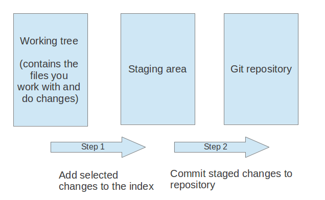

Simple Git Tutorial Simple Git Tutorial
Table of Contents
1 Preface
presentation mode: Git Usage
This article shows you how to create simple git server and explain how to use git command. for example, git clone, add, commit, push. most important thins is to understand the git's concept and basic terminology, if not, it's not easy to soak into git world.
2 Git Concept
2.1 Basic Terminology

| working tree | the set of working files for the repository. these files are changed and committed to repository. |
| stage(or index) | the place to store changes in the working tree before the commit. |
| repository | origin: normally indicate remote repository |
| branch | a named pointer to a commit, master is default. |
| master: normall your own branch | |
| check out: selecting a branch | |
| tag | a commit which uniquely identifies a version of the Git repository. |
| pull request | proposing your changes and requesting that someone review and pull in your contribution and merge them into their branch |
for more detailed explaination, please refer to http://www.vogella.com/tutorials/Git/article.html
2.2 Git Operation

3 Setting up private git repository
Sometimes you should create your own git repository, but github, specially in closed network environment. So the first section is to make your own git repository.
3.1 demo environment
To make you understand easily, I assume below demo environment. * demo environment *
- git server: vm1
- git client computer: vm2
- developer1: John on vm2
- developer2: Jane on vm2
3.2 git user on git server
At first, we will create git user to allow other user's connection.
Original guide lets user create ssh-key, but I'll just use password type on ssh connection. It is better to use ssh-key, but I want to keep focus on the git based command.
#+BEGINSRC ## on git server vm1\( sudo adduser git vm1\) sudo passwd git vm1$ su git #+ENDSRC shell
3.3 make git repository on git server
Let's create project directory and initialize it.
#+BEGINSRC shell ## on git server vm1\( mkdir ~git/test_project.git vm1\) cd ~git/testproject.git vm1$ git init –bare Initialized empty Git repository in home/git/testproject.git ## <– remember this path, copy it. #+ENDSRC shell
3.4 Create John's project named 'testproject'
John will create the 1st project.
#+BEGINSRC shell ## as John user on vm2 john@vm2\( mkdir myproject john@vm2\) cd myproject john@vm2\( git init john@vm2\) echo "the first released project" > README.md john@vm2\( git add . john@vm2\) git commit -m 'the 1st' john@vm2\( git remote add origin git@vm1:/home/git/test_project.git ## <-- paste it from above john@vm2\) git push origin master #+ENDSRC shell
You will get some password message for ssh-key after * git push origin master * command. Then, press ENTER and you will be asked 'ssh password', at this time, input git's password.
3.5 Clone 'testproject' for Jane
Jane will modify the file and push to master.
#+BEGINSRC shell ## as Jane user on vm2 jane@vm2\( git clone git@vm1:/home/git/test_project.git jane@vm2\) cd testproject jane@vm2\( echo "jane's code is add here" >> README.md jane@vm2\) git add README.md jane@vm2\( git commit -m 'new code added by jane' jane@vm2\) git push origin master #+ENDSRC shell
4 Basic Git Usage
4.1 Online Git Practice
just follow the below sandbox, this is better than I can explain
5 Git Workflow
5.1 Workflow Diagram
6 Conclution
Git is very useful to manage your contents not only source codes but also your own documents. Also in this devops erra, knowing the git workflow makes you communicate with other organization easily. I hope this document to be helpful.